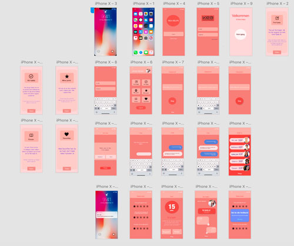

“Multimediedesignstuderende på den danske og den internationale linje har ikke meget med hinanden at gøre, det vil KEA gerne gøre noget ved. Men hvordan kan en KEA app understøtte dette? KEA app’en må også gerne forbedre de studerendes muligheder for at få et arbejde efter endt uddannelse.”
Via et spørgeskema fandt man ud af at eleverne på Kea, var glade for lærerne, skolen, sammenholdet, og det sociale. De var mindre glade for den dyre kantine og til tider mangel på struktur
Derudover er den danske meget tilbøjlige for at komme til at arbejde mere sammen med den internationale linje, iform af evt at blive sat sammen i gruppe til en case.
Udfra forskellige test, ses ovenfor en test af den sidste udgave af app'en. Jeg fik hjælp fra flere testpersoner, som gav feedback på design og forståelse af app'en. Det resulterede i at jeg fik lavet om i design og begyndte at få mere forklaring på, så man som bruger præcist ved hvad de forskellige ikoner betyder og hvad man kan derinde.
